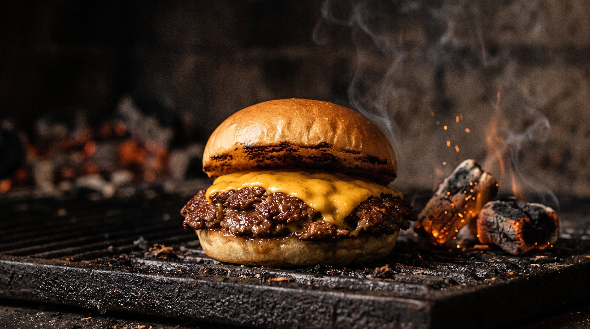
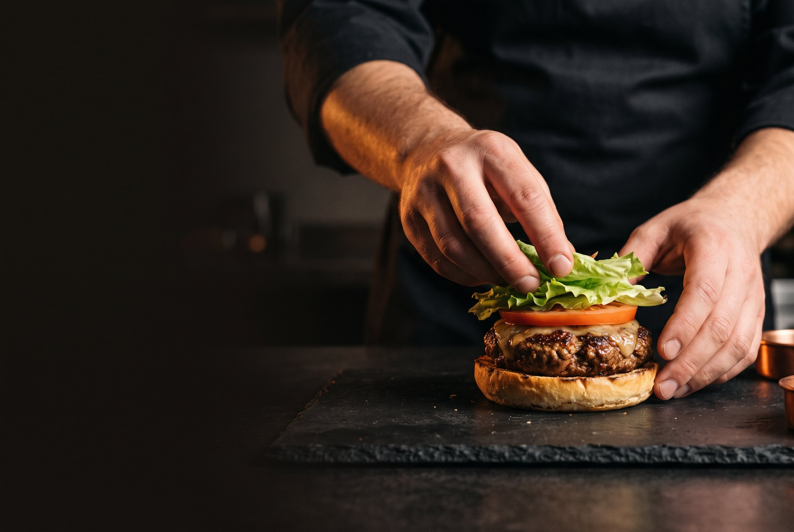
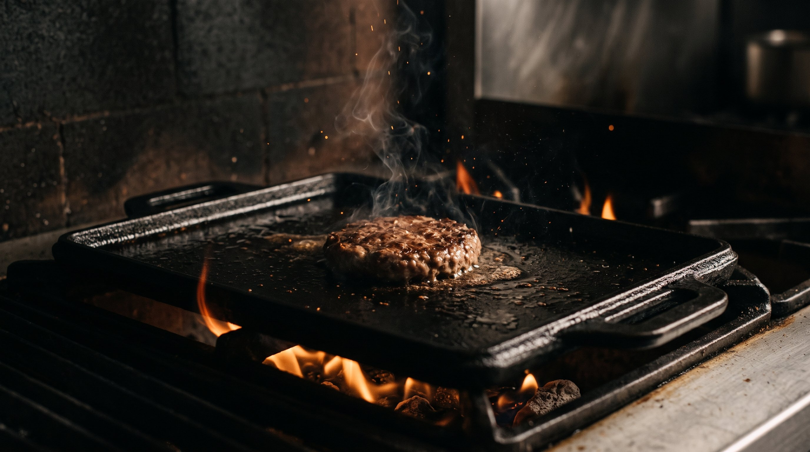
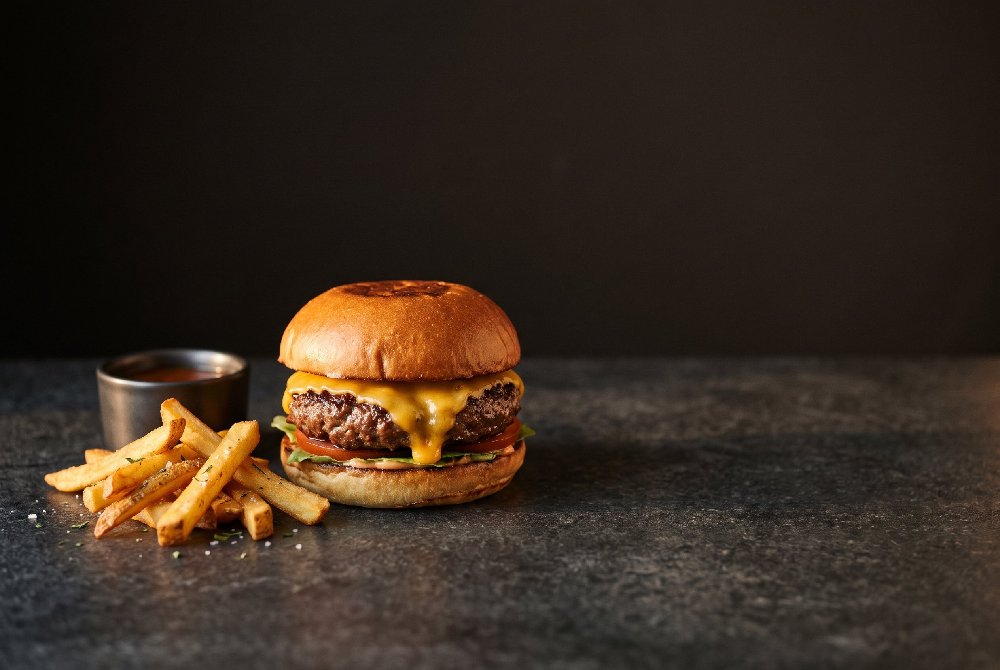
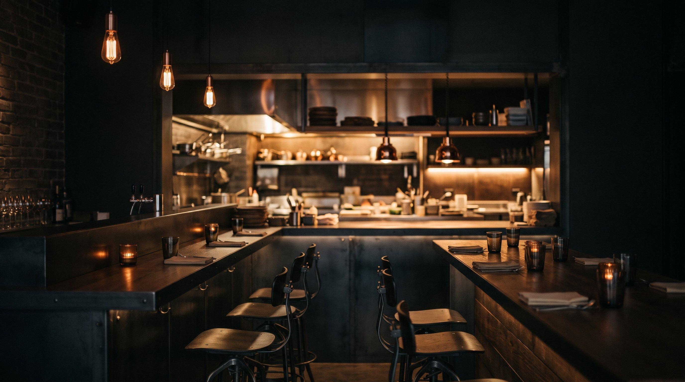

O Véspera
Blend da casa, queijo meia cura, cebola na chapa, molho de mostarda tostada e pão amanteigado.
O PRIMEIRO DA CASA
UMA CASA PARA O FIM DO DIA
Carne no fogo. Pão na chapa. O resto pode esperar.
01 / O FOGO
Crosta dourada, centro suculento, fumaça na medida.
A CASA / 01
A gente acende a chapa antes de abrir a porta. Doura o pão na manteiga, deixa a carne encontrar o ferro e serve quando tudo está no ponto. Sem atalho entre a cozinha e a mesa.
O que sai da chapa ↘

CALOR, FERRO, PACIÊNCIA
A chapa faz
o que o fogo
promete.
DA CHAPA / 02
Poucos ingredientes. Cada um no lugar certo. Escolha seu ritual.
Blend da casa, queijo meia cura, cebola na chapa, molho de mostarda tostada e pão amanteigado.
O PRIMEIRO DA CASABlend da casa, cheddar inglês, bacon crocante, picles agridoce e mel de pimenta.
DOCE, SALGADO, BRASABlend da casa, brie derretido, cogumelos salteados e folhas frescas no pão tostado.
INTENSO E MACIOBatata rústica, alecrim, sal de parrilla e aioli de alho assado.
PARA A MESA
Cardápio, preços e marca são fictícios e servem como demonstração visual.

QUANDO A NOITE CHAMA / 03
Acenda a conversa. A gente cuida da chapa.
Formulário demonstrativo, sem envio de dados. Configure o e-mail real antes de publicar.